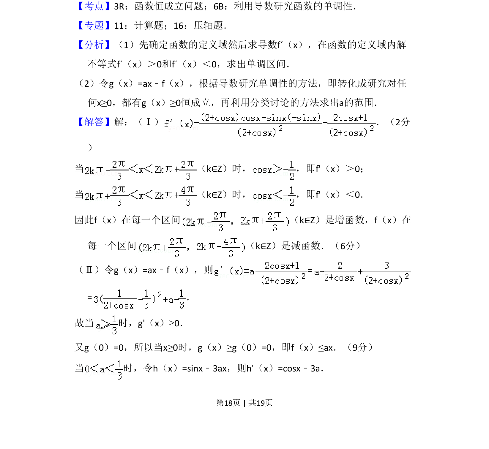
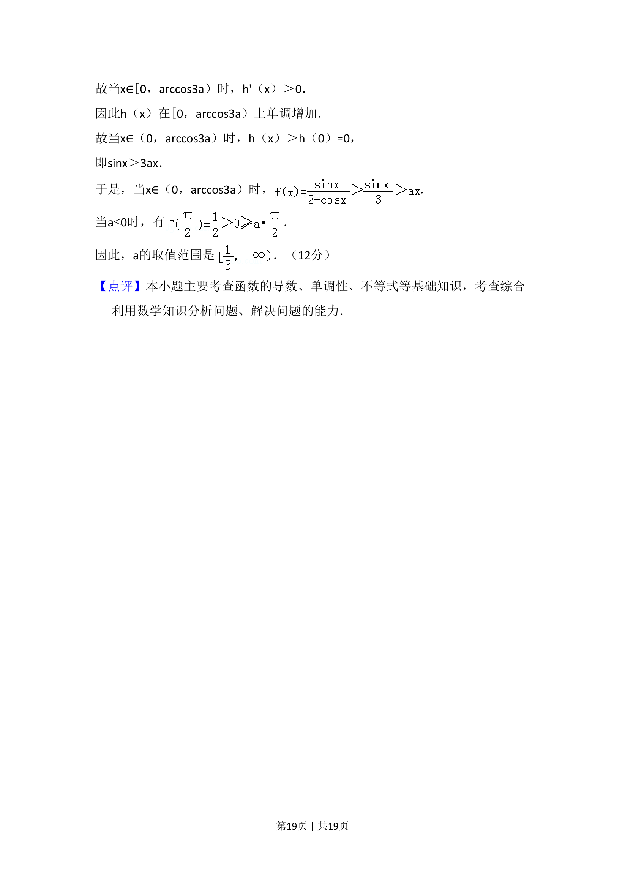

考点：利用导数研究函数的单调性 恒成立问题
已知函数求单调区间以及不等式恒成立求参数范围


📄 原 PDF 第 18 页：
素材/真题/吉林/2008-2024·（吉林）数学高考真题/2008年高考数学试卷（理）（全国卷Ⅱ）（解析卷）.pdf
22．（12分）设函数 ． （Ⅰ）求f（x）的单调区间； （Ⅱ）如果对任何x≥0，都有f（x）≤ax，求a的取值范围．
【考点】3R：函数恒成立问题；6B：利用导数研究函数的单调性．菁优网版权所有 【专题】11：计算题；16：压轴题． 【分析】（1）先确定函数的定义域然后求导数fˊ（x），在函数的定义域内解 不等式fˊ（x）＞0和fˊ（x）＜0，求出单调区间． （2）令g（x）=ax﹣f（x），根据导数研究单调性的方法，即转化成研究对任 何x≥0，都有g（x）≥0恒成立，再利用分类讨论的方法求出a的范围． 【解答】解：（Ⅰ） ．（2分 ） 当 （k∈Z）时， ，即f'（x）＞0； 当 （k∈Z）时， ，即f'（x）＜0． 因此f（x）在每一个区间 （k∈Z）是增函数，f（x）在 每一个区间 （k∈Z）是减函数．（6分） （Ⅱ）令g（x）=ax﹣f（x），则= =． 故当 时，g'（x）≥0． 又g（0）=0，所以当x≥0时，g（x）≥g（0）=0，即f（x）≤ax．（9分） 当 时，令h（x）=sinx﹣3ax，则h'（x）=cosx﹣3a．